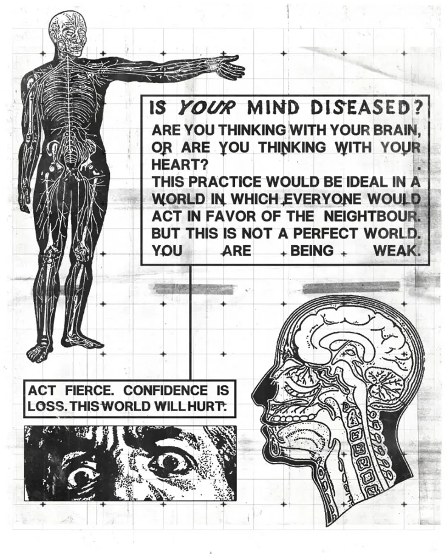

Recentemente mi sono chiesto perché non riesca più a trovare il mio vero "io".
Recentemente mi sono chiesto perché non riesca più a trovare il mio vero "io". È probabilmente una delle domande più comuni dei nostri giorni. La coscienza di sé, la percezione di ciò che siamo davvero, viene costantemente minata da ciò che la società ci chiede, direttamente o indirettamente, di essere. La società sembra pretendere da ciascuno una versione di sé standardizzata, quasi robotica. Sul luogo di lavoro bisogna comportarsi in un determinato modo, con gli amici in un altro; alla famiglia, spesso, si nascondono intere parti di sé. Finiamo così per indossare delle maschere, perché dobbiamo essere sempre vigili, sempre in controllo di noi stessi. Il concetto della maschera è affascinante quanto inquietante. All'inizio è uno scudo: ci protegge dagli altri, dalle loro aspettative e dal loro giudizio. Con il tempo, però, rischia di cucirsi sulla pelle e di diventare parte di noi. Finisce persino per proteggerci dal giudizio che rivolgiamo alla nostra stessa persona. Diventiamo così vittime dei nostri stessi inganni, subdoli persino verso la nostra mente. Copriamo talmente a lungo ciò che consideriamo difettoso da non riuscire più a riconoscerci. Passiamo dall'essere vittime all'essere carnefici di noi stessi, divorando ciò che ci rendeva umani e unici nel tentativo di conformarci, di omologarci, di diventare accettabili.
